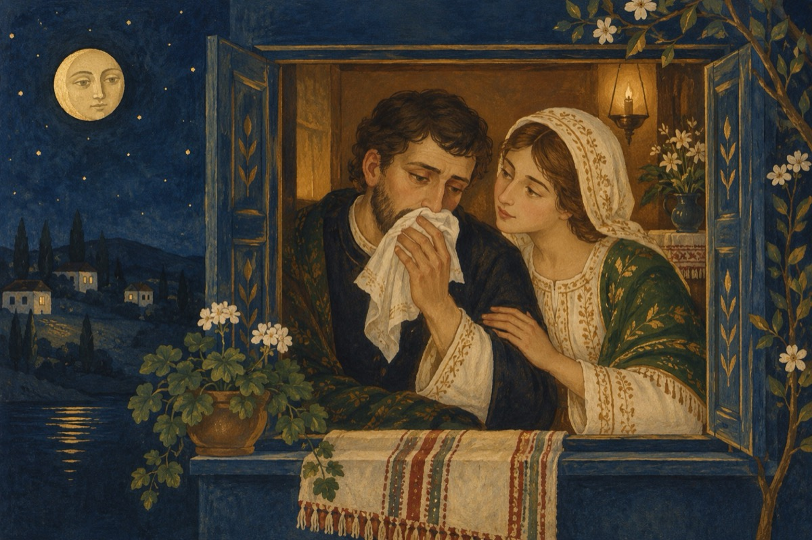

Atenție la neatenție
Auzi Ioane, vezi că-ai strănutat
Semn bun o să facem chef curând.
Vezi COVID-19 că te-a vizitat.
Nu de mine este el flămând!
Mai bine pune-ți batista la gură
De unde știi; ești prietenă cu vreun doctor?
Eu atâta-ți spun, n-am chef de aventură.
Știi că te iubesc, te ador!
Te ustură-n gât și-ți curge nasul,
Hai să fim serioși, îl aștept pe nașul!
Vai, nu se poate ai temperatură mare,
Vreau să chem o salvare
Eu zic să-ți vezi de-ale tale
Nu trebuie să stăm în casă.
De ce nu, mergem la plimbare.
Cine ce are cu noi ce ne pasă?
Afară e pericol mare!
Dar ce, au dat turcii, ce te sperii?
Pentru că-i pericol de infectare.
Ne apărăm noi dar și pe alții îi aperi
Auzi draga mea, afară-i ceață?
Da de unde, e soare și-i frumos.
Nu știu de ce, îmi joacă ceva în față
Hai ridică-te, de ce ai căzut jos?
Morala:
Nu vă mai jucați cu viața,
Avem una singură!
De unde-i mai subțire, se rupe ața
Să vă rămână ca-nvățătură!
Vasile Groza